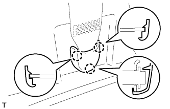
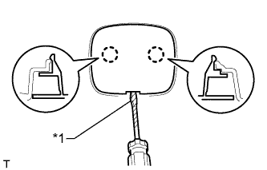
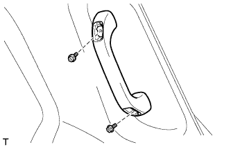
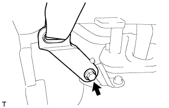
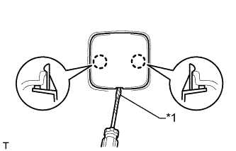

АВАРИЙНАЯ СИРЕНА В СБОРЕ (для моделей с автономным источником питания) > СНЯТИЕ |
| 1. СНИМИТЕ ЗАДНЕЕ СИДЕНЬЕ № 2 В СБОРЕ |
Для сидений с ручным приводом:
Снимите заднее сиденье № 2 в сборе (Нажмите здесь).
Для сидений с электроприводом:
Снимите заднее сиденье № 2 в сборе (Нажмите здесь).
Для моделей с противоположно расположенными сиденьями:
Снимите заднее сиденье № 2 в сборе (Нажмите здесь).
| 2. СНИМИТЕ СПИНКУ ЗАДНЕГО СИДЕНЬЯ № 1 В СБОРЕ |
для сидений раздельного типа 60/40 с двойным складыванием с левой стороны:
Снимите спинку заднего сиденья № 1 в сборе (Нажмите здесь).
для сидений раздельного типа 60/40 с двойным складыванием с правой стороны:
Снимите спинку заднего сиденья № 1 в сборе (Нажмите здесь).
| 3. СНИМИТЕ ЗАДНЮЮ НАКЛАДКУ ПОРОГА ПОЛА № 1 (для моделей с задним сиденьем № 2) |
 |
С помощью отвертки освободите 2 захвата и снимите заднюю накладку порога пола № 1.
| *1 | Защитная клейкая лента |
| 4. СНИМИТЕ ПРАВУЮ ВНУТРЕННЮЮ ЗАДНЮЮ БОКОВУЮ ОПОРНУЮ НАКЛАДКУ |
| 5. СНИМИТЕ ОПОРНУЮ НАКЛАДКУ ПРАВОЙ ЗАДНЕЙ ДВЕРИ |
| 6. СНИМИТЕ УПЛОТНИТЕЛЬ ОБШИВКИ ПРОЕМА ПРАВОЙ ЗАДНЕЙ ДВЕРИ |
| 7. СНИМИТЕ НАКЛАДКУ КРЕПЛЕНИЯ ПОЯСНОГО РЕМНЯ БЕЗОПАСНОСТИ |
|  |
Освободите 3 захвата и снимите накладку крепления поясного ремня безопасности.
| 8. СНИМИТЕ ЗАДНЮЮ КРЫШКУ В СБОРЕ (для моделей с задней крышкой) |
Снимите заднюю крышку.
| 9. СНИМИТЕ ПЕРЕДНЮЮ ОБЛИЦОВОЧНУЮ НАКЛАДКУ БАГАЖНОГО ОТДЕЛЕНИЯ (для моделей без заднего сиденья № 2) |
 |
Освободите 4 захвата и снимите накладку.
 |
Выверните болт и снимите защелку ремня для удержания багажа и переднюю облицовочную накладку багажного отделения.
| *1 | Защелка ремня для удержания багажа |
| 10. СНИМИТЕ ПАНЕЛЬ ПОЛКИ БАГАЖНОГО ОТДЕЛЕНИЯ № 1 (для моделей без заднего сиденья № 2) |
 |
Освободите фиксатор и снимите панель полки багажного отделения № 1.
| 11. СНИМИТЕ ЗАДНЮЮ ОПОРНУЮ ПЛАСТИНУ КОВРИКА ЗАДНЕГО ПОЛА (для моделей без заднего сиденья № 2) |
 |
Освободите 5 фиксаторов и 4 захвата и снимите заднюю опорную пластину коврика заднего пола.
| 12. СНИМИТЕ ПРАВУЮ БОКОВУЮ НАПРАВЛЯЮЩУЮ ПОЛА (для моделей с направляющей полки багажного отделения) |
| 13. СНИМИТЕ ЛЕВУЮ БОКОВУЮ НАПРАВЛЯЮЩУЮ ПОЛА (для моделей с направляющей полки багажного отделения) |
 |
Выверните 3 болта и снимите боковую направляющую пола.
| 14. СНИМИТЕ ЗАДНИЙ НАПОЛЬНЫЙ КОВРИК |
Освободите 4 захвата и снимите задний напольный коврик.

| *A | для моделей без направляющей полки багажного отделения | *B | для моделей с направляющей полки багажного отделения |
| *C | Для сидений с противоположным расположением | - | - |
| 15. СНИМИТЕ НАКЛАДКУ КРЕПЛЕНИЯ ПОЯСНОГО РЕМНЯ БЕЗОПАСНОСТИ ЗАДНЕГО СИДЕНЬЯ № 1 |
 |
Освободите 3 захвата и снимите накладку крепления поясного ремня безопасности заднего сиденья № 1.
| 16. СНИМИТЕ ЗАЩЕЛКУ ОБЛИЦОВКИ БАГАЖНОГО ОТДЕЛЕНИЯ № 1 |
 |
Снимите защелку облицовочной панели багажного отделения, повернув ее по часовой стрелке.
| 17. СНИМИТЕ КОЛПАЧОК КРЕПЛЕНИЯ ЗАДНЕЙ КРЫШКИ № 1 (для моделей без задней крышки) |
|  |
С помощью отвертки отцепите 2 захвата и снимите колпачок крепления задней крышки № 1.
| *1 | Защитная клейкая лента |
| 18. СНИМИТЕ ПРАВУЮ ПЕРЕДНЮЮ БОКОВУЮ ОБЛИЦОВОЧНУЮ НАКЛАДКУ ПОЛКИ БАГАЖНОГО ОТДЕЛЕНИЯ (для моделей с задней крышкой) |
 |
С помощью отвертки освободите 2 захвата и снимите переднюю боковую облицовочную накладку полки багажного отделения.
| *1 | Защитная клейкая лента |
| 19. СНИМИТЕ ЗАГЛУШКУ ВЕРХНЕГО ПОРУЧНЯ (для моделей с задним сиденьем № 2) |
 |
С помощью отвертки освободите 2 захвата и снимите заглушку верхнего поручня.
| *1 | Защитная клейкая лента |
| 20. СНИМИТЕ ВЕРХНИЙ ПОРУЧЕНЬ В СБОРЕ (для моделей с задним сиденьем № 2) |
|  |
Выверните 2 болта и снимите верхний поручень.
| 21. СНИМИТЕ ПРАВУЮ БОКОВУЮ ОБЛИЦОВОЧНУЮ ПАНЕЛЬ ПОЛКИ БАГАЖНОГО ОТДЕЛЕНИЯ В СБОРЕ |
Для моделей без заднего сиденья № 2:
 |
Выверните болт и отсоедините напольное крепление ремня безопасности заднего сиденья № 1.
 |
Освободите 6 захватов и 2 направляющих и отсоедините опору рычага фиксации спинки заднего сиденья.
Выверните 4 болта и винты.
Ослабьте 5 фиксаторов и 8 захватов.
Отсоедините все разъемы.
Пропустите опору рычага фиксации спинки заднего сиденья через боковую облицовочную панель полки багажного отделения и снимите боковую облицовочную панель полки багажного отделения.

Для моделей с задним сиденьем № 2:
|
Выверните болт и отсоедините напольное крепление ремня безопасности заднего сиденья № 1.
|  |
Выверните болт и отсоедините напольное крепление ремня безопасности заднего сиденья № 2.
Выверните 2 болта и винт.
Ослабьте 4 фиксатора и 8 захватов.
Отсоедините все разъемы и снимите боковую облицовочную панель полки багажного отделения.

| 22. СНИМИТЕ ЗАДНИЙ БОКОВОЙ ВОЗДУХОВОД № 2 |
 |
Освободите 2 фиксатора.
Освободите захват и снимите воздуховод.
| 23. СНИМИТЕ СИРЕНУ ПРОТИВОУГОННОЙ СИСТЕМЫ В СБОРЕ (для 5-дверных моделей) |
Отсоедините разъем.
Выверните 2 болта и снимите сирену противоугонной системы.
| 24. СНИМИТЕ ЗАДНЕЕ СИДЕНЬЕ В СБОРЕ (для 3-дверных моделей) |
для опускаемых сидений раздельного типа 60/40 с левой стороны:
Снимите заднее сиденье в сборе (Нажмите здесь).
для опускаемых сидений раздельного типа 60/40 с правой стороны:
Снимите заднее сиденье в сборе (Нажмите здесь)
| 25. СНИМИТЕ ОПОРНУЮ НАКЛАДКУ ПРАВОЙ ДВЕРИ (для 3-дверных моделей) |
| 26. СНИМИТЕ УПЛОТНИТЕЛЬ ОБШИВКИ ПРОЕМА ПРАВОЙ ПЕРЕДНЕЙ ДВЕРИ |
| 27. СНИМИТЕ ЗАДНЮЮ КРЫШКУ В СБОРЕ (для 3-дверных моделей) |
Снимите заднюю крышку.
| 28. СНИМИТЕ НАЛАДКУ КОМПЛЕКТА НАПОЛЬНЫХ КОВРИКОВ (для 3-дверных моделей) |
 |
С помощью отвертки расцепите 2 захвата и снимите накладку установочной пластины коврика.
| *1 | Защитная клейкая лента |
| 29. СНИМИТЕ ЗАДНЮЮ ОПОРНУЮ ПЛАСТИНУ КОВРИКА ЗАДНЕГО ПОЛА (для 3-дверных моделей) |
 |
Выверните 5 винтов.
Освободите 6 захватов и снимите заднюю опорную пластину коврика заднего пола.
| 30. СНИМИТЕ КРЫШКУ ОТВЕРСТИЯ В ЗАДНЕЙ БОКОВОЙ ОБЛИЦОВКЕ (для 3-дверных моделей) |
 |
Освободите 2 захвата и 2 направляющих и снимите крышку отверстия в задней боковой облицовочной панели.
| 31. СНИМИТЕ ЗАДНИЙ НАПОЛЬНЫЙ КОВРИК В СБОРЕ (для 3-дверных моделей) |
 |
Снимите задний напольный коврик.
| 32. СНИМИТЕ ЗАЩЕЛКУ ОБЛИЦОВКИ БАГАЖНОГО ОТДЕЛЕНИЯ № 1 (для 3-дверных моделей) |
|
Снимите защелку облицовочной панели багажного отделения, повернув ее по часовой стрелке.
| 33. СНИМИТЕ КОЛПАЧОК КРЕПЛЕНИЯ ЗАДНЕЙ КРЫШКИ № 1 (для 3-дверных моделей) |
|  |
С помощью отвертки освободите 2 захвата и снимите колпачок крепления задней крышки.
| *1 | Защитная клейкая лента |
| 34. СНИМИТЕ ПЕРЕДНЮЮ БОКОВУЮ ОБЛИЦОВОЧНУЮ НАКЛАДКУ ПОЛКИ БАГАЖНОГО ОТДЕЛЕНИЯ |
|
С помощью отвертки освободите 2 захвата и снимите переднюю боковую облицовочную накладку полки багажного отделения.
| *1 | Защитная клейкая лента |
| 35. СНИМИТЕ КАРМАН В ЗАДНЕЙ БОКОВОЙ ОБЛИЦОВКЕ (для 3-дверных моделей) |
 |
Наклейте защитную ленту вокруг кармана в задней боковой облицовочной панели.
С помощью отвертки освободите 6 захватов и 2 направляющих и снимите карман в задней боковой облицовочной панели.
| *1 | Защитная клейкая лента |
| 36. СНИМИТЕ НАКЛАДКУ КРЕПЛЕНИЯ ПОЯСНОГО РЕМНЯ БЕЗОПАСНОСТИ (для 3-дверных моделей) |
 |
Освободите 3 захвата и снимите накладку крепления поясного ремня безопасности.
| 37. СНИМИТЕ ПРАВУЮ БОКОВУЮ ОБЛИЦОВОЧНУЮ ПАНЕЛЬ ПОЛКИ БАГАЖНОГО ОТДЕЛЕНИЯ В СБОРЕ (для 3-дверных моделей) |
Выверните болт и отсоедините напольное крепление ремня безопасности переднего сиденья.
 |
Выверните болт и отсоедините напольное крепление ремня безопасности заднего сиденья № 1.
Выверните 3 болта и 2 винта.
Расцепите 9 захватов и 12 фиксаторов.
Отсоедините разъем и снимите боковую облицовочную панель полки багажного отделения.
| 38. СНИМИТЕ СИРЕНУ ПРОТИВОУГОННОЙ СИСТЕМЫ В СБОРЕ (для 3-дверных моделей) |
Отсоедините разъем.
Выверните 2 болта и снимите сирену противоугонной системы.